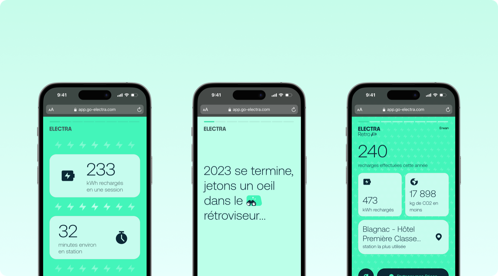
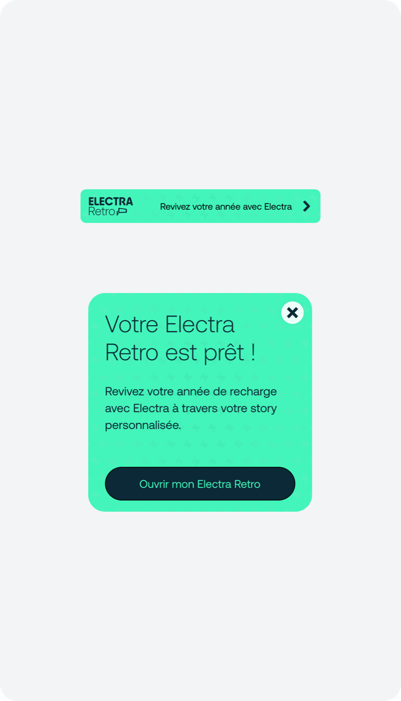
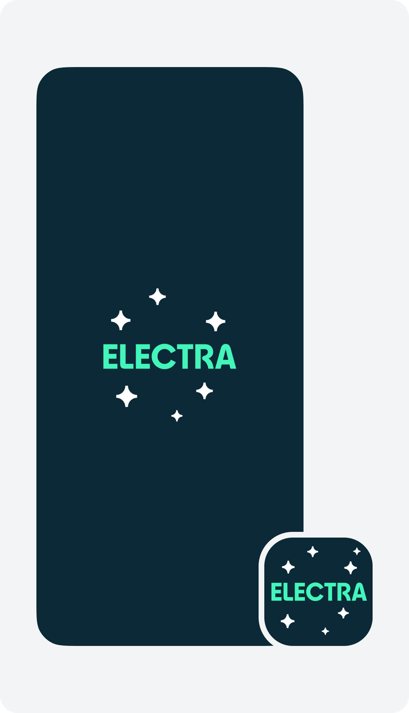
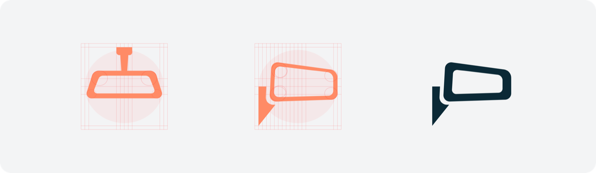
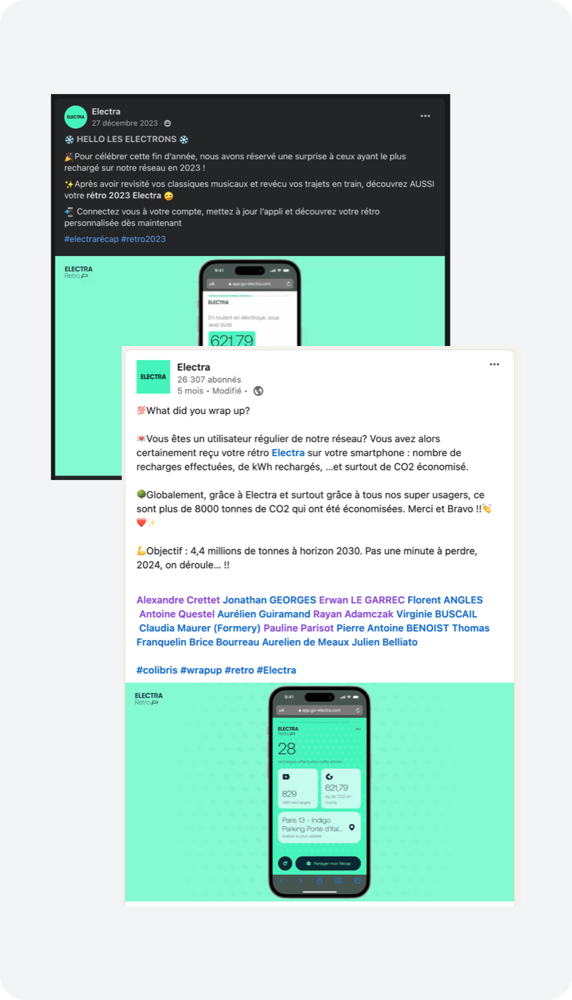

Retro
Un Spotify Wrapped de la recharge électrique, proposé pendant un hackathon et livré trois semaines plus tard. 33 % de l'audience visée l'a ouvert.
- Entreprise
- Electra
- Durée
- 3 semaines
- Rôle
- Idée, design, motion, mise en place analytics
- Périmètre
- Maquettes · Motion · Analytics · Communication
- Environnement
- Mobile · B2C
Une idée lancée en hackathon
J'ai apporté l'idée lors d'un hackathon interne : adapter Spotify Wrapped à Electra. Offrir aux utilisateurs une lecture plaisante et partageable de leur année de recharge — et donner à la communauté quelque chose à se raconter.
Le pari reposait sur une lecture de l'audience : les utilisateurs Electra sont technophiles, la plupart connaissent Wrapped, et les conducteurs de véhicules électriques fonctionnent déjà comme une communauté — ils se regroupent, comparent leurs voitures, échangent leurs expériences.

Une semaine pour le prouver
Le hackathon nous donnait une seule semaine pour rechercher, concevoir, développer et tester. Ce n'est pas assez pour livrer — c'est exactement assez pour produire une preuve de concept assez convaincante pour obtenir du temps. C'est ce qui s'est passé : la direction a ensuite accordé deux semaines de plus.
Livrer en web-app autonome plutôt qu'en natif dans l'app. Expérience identique pour l'utilisateur, bien plus rapide pour les développeurs — et la deadline était la vraie contrainte.
Des faits amusants, pas de la surveillance
Nous avons listé toutes les données dont nous disposions, puis les avons filtrées avec une seule règle : chaque écran doit se lire comme un cadeau, jamais comme la preuve qu'on suit chaque déplacement. Cette règle a éliminé plusieurs statistiques pourtant intéressantes.
La structure s'est arrêtée sur quatre parties : un écran d'accueil, cinq écrans de statistiques annuelles, deux sur les stations visitées, et deux écrans de clôture qui remercient l'utilisateur et récapitulent les chiffres clés.
Les profils utilisateurs et une personnalisation plus poussée ont été conçus, puis abandonnés. Trop complexes à développer dans le temps imparti — et une personnalisation à moitié faite se lit plus mal que pas de personnalisation du tout.
Une story, qu'on fait défiler
Retro se comporte comme une story Instagram : chaque écran avance seul après un court délai, ou au tap. Le format était le sujet — c'est un rythme que les utilisateurs connaissent déjà, personne n'a à apprendre une navigation.


Sur les semaines deux et trois, l'équipe était à deux : un développeur et moi. Il nettoyait les écrans existants pendant que je concevais les animations. Ça a imposé un arbitrage — l'animation coûtait en performance, il fallait donc réduire le nombre d'écrans. J'ai coupé des écrans plutôt que d'affadir le motion, parce que c'est le motion qui en faisait un événement.

Définir qui le reçoit
Avec l'équipe data et le PM de ma squad, nous avons défini l'audience : les utilisateurs récurrents ayant effectué un minimum de recharges sur un mois — environ 3 000 personnes. J'ai configuré le tracking MixPanel moi-même pour mesurer combien l'ouvraient et jusqu'où ils allaient.
Ensuite, le rendre visible : splashscreen et icône d'app saisonniers, messages in-app, et une bannière d'accueil limitée dans le temps. Hors app, j'ai travaillé avec le marketing pour le pousser sur Facebook et LinkedIn.

Un sur trois l'a ouvert
Un tiers de l'audience est un bon chiffre au vu des circonstances : c'était une première édition, les utilisateurs ne s'y attendaient pas, et le lancement est tombé sur les semaines les plus chargées de l'année — en concurrence avec tous les autres messages de fin d'année.
L'engagement a confirmé la lecture initiale : cette communauté veut qu'on lui parle, pas seulement qu'on la serve. C'est un mandat pour une seconde édition — avec la personnalisation qu'il avait fallu couper.